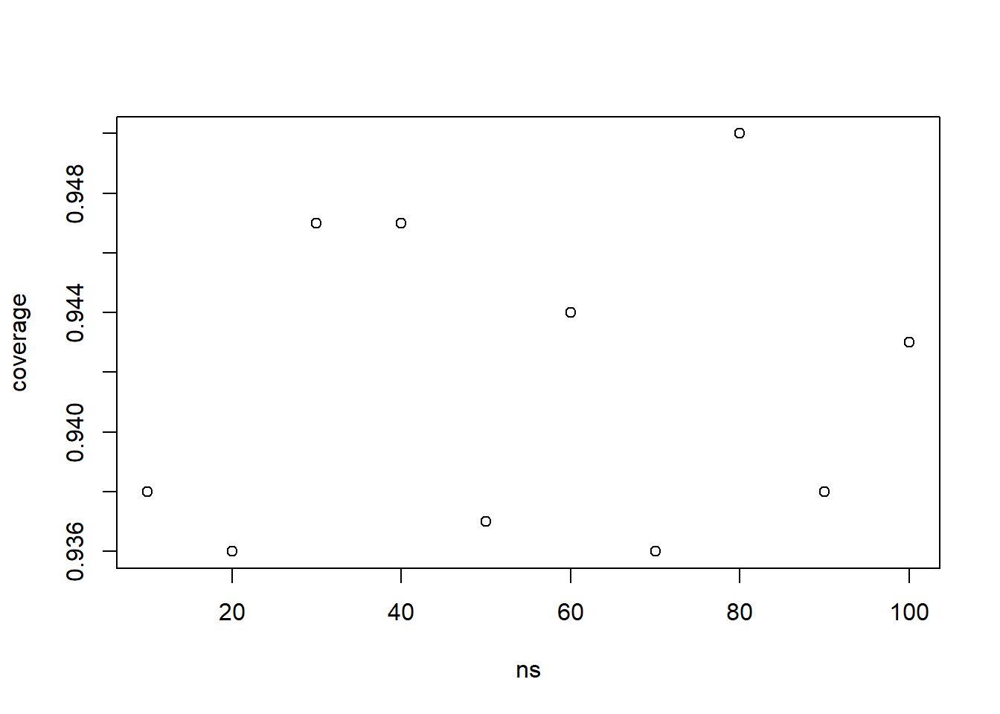
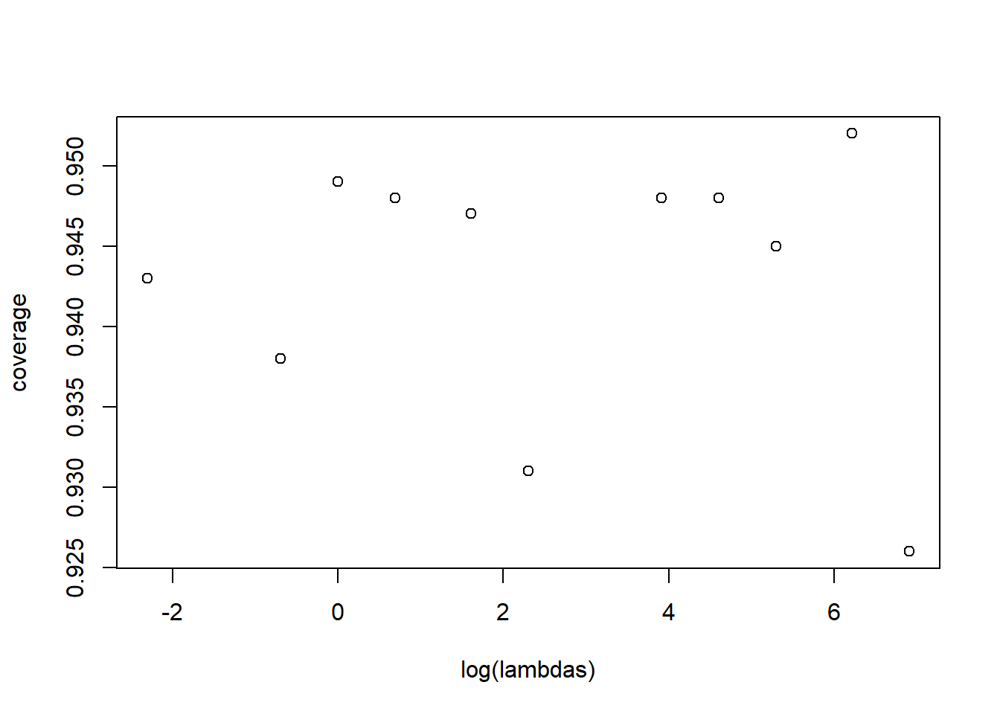
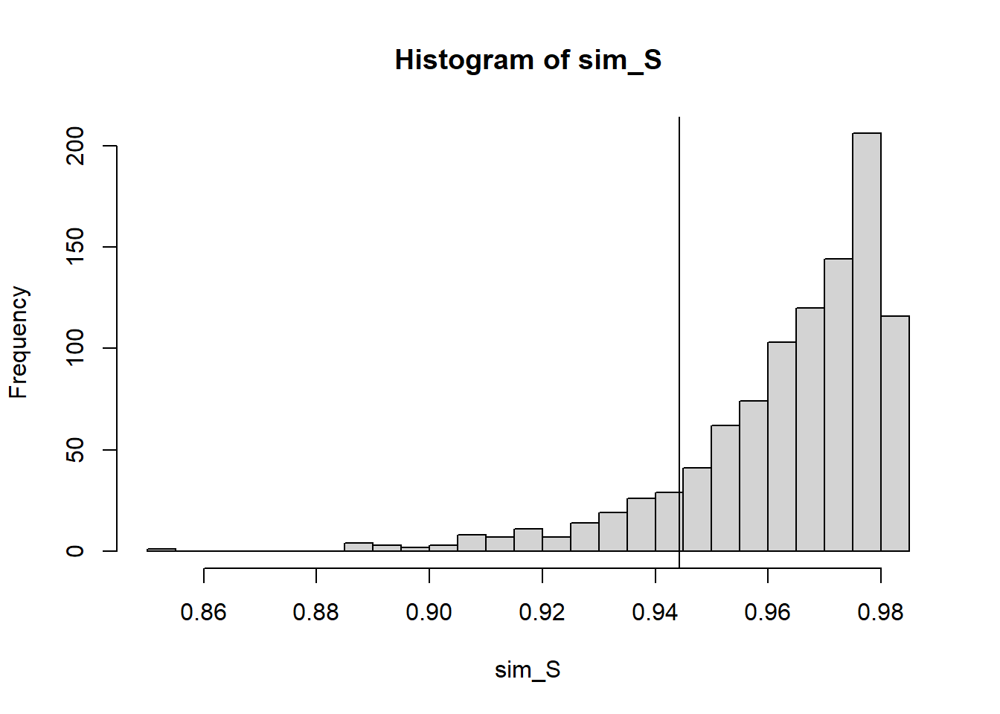
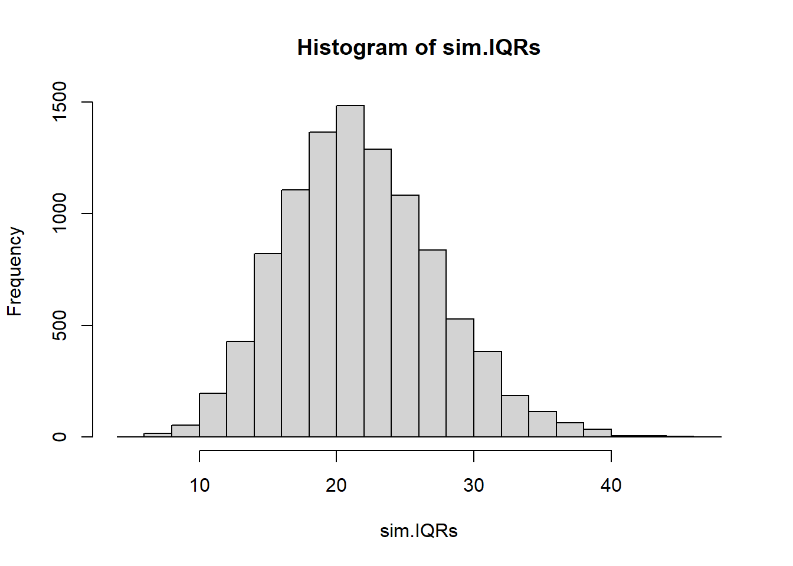
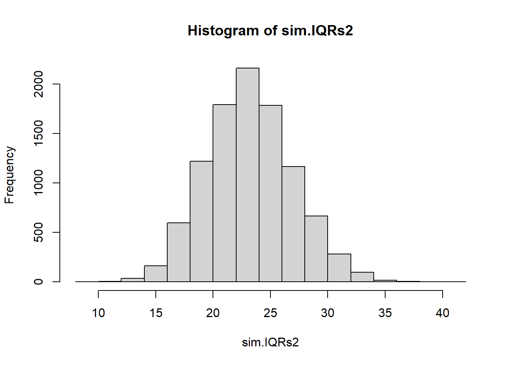
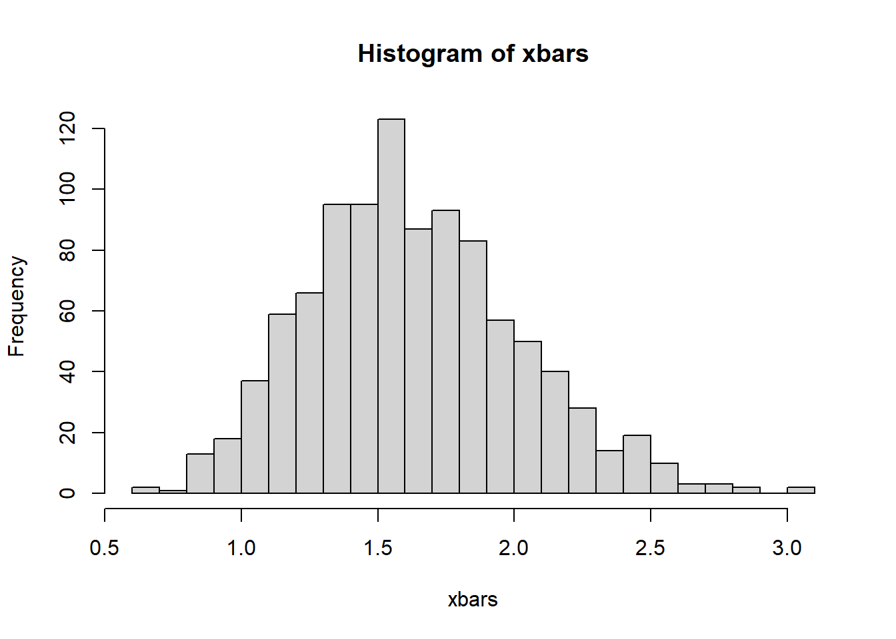

I’ve modified the code to take in the number of MC replicates for the calculation of the LB and UB, as well as the number of MC replicates to estimate coverage rate.
Try playing around with nsamp and lambda_true in the code above.
Consider what happens if nsamp is small (e.g., 20 or 25): \(\bar{X}\) will not necessarily be close to \(\mathbb{E} \bar{X} = 1/\lambda\), and thus our estimate of \(\lambda\), \(1/\bar{X}\) will likely be far from \(\lambda\), and thus our “fake” data will not actually look very much like it should.
ns <-seq(10,100, 10) # we'll look at sample sizes 10 to 100coverage <-numeric(0)for(n in ns){ coverage <-c(coverage, estimate_exp_coverage(2,n,1000,1000))}plot(ns, coverage)

The coverage rate is a little on the low side, about 92.5% when n is low (10) but when N gets to about 40+ the coverage rate gets to 94 to 94.5%.
In another direction, try playing around with the parameter \(\lambda > 0\). What happens if you make \(\lambda\) really big or really close to zero?
lambdas <-c(0.1, 0.5,1,2,5,10,50,100,200,500,1000)coverage <-numeric(0)for(lambda in lambdas){ coverage <-c(coverage, estimate_exp_coverage(lambda,100,1000,1000))}plot(log(lambdas), coverage)

The coverage rate seems to be between 93.5% and 95%. The trend is not obvious, it doesn’t seem like the lambda matters terribly much.
The reason for this? Changing lambda only changes the scale of the distribution, not its shape. It shouldn’t have an effect on how close \(1/\bar{X}\) is to \(\lambda\). What matters much more is the sample size \(n\) that we have to work with.
24.2 Example: Estimating the maximum of a sample
Say we sample from a random variable \(X \sim \text{Uniform}(0, M)\) and get the following data
X <-read.csv("data/uniform_sample.csv")$x
One point estimate we may naturally use is the sample maximum
max(X)
[1] 0.9443383
Suppose we were to use this as our point estimate of \(M\) (seems natural). Can we quantify our confidence in the estimate?
Say we want to give a 95% confidence interval for the population maximum \(M\). Monte Carlo would have us take the 2.5th and 97.5th percentiles.
quantile(sim_S, c(.025, .975))
2.5% 97.5%
0.8827958 0.9439389
max(X)
[1] 0.9443383
Is this reasonable? Are we 95% sure that the population max is within that interval? Of course not! The sample max isn’t even within the interval. Clearly the sample maximum is not a good point estimate to use for the population maximum.
It turns out that \(\frac{n+1}{n}\max(X_1,\ldots, X_n)\) is an unbiased estimator for the population maximum in this case.
(M.hat <- (n+1)*max(X)/n)
[1] 0.963225
Let’s see what the resulting interval looks like:
sim_S <-0n <-length(X) for(i in1:1000){ simData <-runif(n, 0, M.hat) sim_S[i] <- (n+1)*max(simData)/n #use the unbiased estimator each time}hist(sim_S, breaks=25)abline(v=max(X))

quantile(sim_S, c(.025, .975))
2.5% 97.5%
0.9119371 0.9820360
This interval contains the sample maximum. And in fact the data was drawn from \(\text{Uniform}(0,.95)\).
Would it contain .95 (the true max) 95% of the time?
Oh that’s not pretty at all. Looks like our supposed 95% interval is more like an 86% interval. Why is this the case? Short answer - the population maximum / sample maximum relationship is not as friendly as the population mean/sample mean relationship. How could we modify our confidence interval estimate?
Turns out (from a little research https://en.wikipedia.org/wiki/German_tank_problem) that the lower bound for a 95% confidence interval would be the sample max \(\max(X)\) and the upper bound would be \(\max(X)/\alpha^{1/n}\)
We’ll produce the same plot, looking at sample sizes of 50, 100, …, 500 to see if there’s a trend
ns <-seq(50,500,50)NMC1 <-1000#decreasing for speedcoverage <-rep(0, length(ns))for(k in1:length(ns)){ n <- ns[k] containsM <-rep(FALSE, NMC1)for(j in1:NMC1){ X.sim <-runif(n, 0, .95) #Generate a new sample containsM[j] <-max(X.sim) <= .95&max(X.sim)/.05^(1/n) >= .95 } coverage[k] <-mean(containsM)}plot(x=ns, y=coverage, type="l", main="coverage rate with increasing n")
No particular trend, a lot of fluctuation. It seems to be between .94 and .96 regardless of sample size. This is good justification for this approach.
24.3 Central Limit Theorem for a uniform population
generate_data <-function(n){ mydata <-runif(n) #Letting the range be 0 to 1, because it# doesn't matter to me.return(mean(mydata))}my_means <-replicate(10000, generate_data(5))hist(my_means, breaks=50)
24.4 Central Limit Theorem of a very very not normal population
Say the population looks like this: X takes two values, 0 and 100, with probabilities .10 and .90
The population is assumed to be normally distributed with a mean of 100 but an unknown standard deviation. We wish to estimate the inter-quartile range - the difference between the 75th and 25th percentiles, and we want a 95% confidence interval for this range.
If we are to proceed with a Monte Carlo confidence interval for the IQR we need to do the following:
Estimate any missing parameter in our model
Use the estimated model to generate new data
From each simulated dataset calculate a point estimate for the IQR
Repeat until we have lots
Find the 2.5th and 97.5th percentiles of those point estimates.
Note: this is a little bit different than before because the missing parameter in the model is not the same thing as the parameter we’re trying to estimate.
sigma.hat <-sd(myNormalData) #I know this is slightly biased, but I #hope it's not going to matter much.#there are unbiased estimators of sigma #out there but I'm not going to use them.NMC <-10000sim.IQRs <-0#lazy vector initfor(i in1:NMC){ sim.data <-rnorm(length(myNormalData),100, sigma.hat)#I need a point estimate of the IQR.#Let's use sample IQR sim.IQRs[i] <-IQR(sim.data)}hist(sim.IQRs)

quantile(sim.IQRs, c(.025, .975)) #this is my approximate 95% conf interval.
2.5% 97.5%
11.82117 33.66993
Or we could argue that the IQR from a normal population can be calculated from qnorm(.75,100,sigma) and qnorm(.25,100,sigma). If we use sigma.hat here we’d get the exact same value every time we calculate it. Maybe on each MC generated sample we re-calculate sigma.hat and use that. This seems like a valid method:
NMC <-10000sim.IQRs2 <-0#lazy vector initfor(i in1:NMC){ sim.data <-rnorm(length(myNormalData),100, sigma.hat)#I need a point estimate of the IQR. sim.sigma.hat <-sd(sim.data) sim.IQRs2[i] <-qnorm(.75,100,sim.sigma.hat)-qnorm(.25,100,sim.sigma.hat)}hist(sim.IQRs2)

quantile(sim.IQRs2, c(.025, .975)) #this is my approximate 95% conf interval.
2.5% 97.5%
16.14001 30.58807
It’s a tighter interval - so the question is is it too narrow (is the coverage rate < .95) or is the first interval using sample IQR too wide (coverage rate > .95)
Well, to answer that we’d have to run a simulation and estimate coverage rates of the two methods. Sounds like fun!
coverage.IQR <-0coverage.qnorm <-0NMC1 <-1000NMC2 <-1000trueIQR <-qnorm(.75)-qnorm(.25)n <-20for(i in1:NMC1){ mc.data <-rnorm(n) #what I use for mu and sigma doesn't matter, so we'll use a standard normal.#I'll assume I know the mean is 0, but the sd is unknown. sig.hat <-sd(mc.data) IQRs1 <-0; IQRs2 <-0;for(j in1:NMC2){ mc2.data <-rnorm(n, 0, sig.hat) IQRs1[j] <-IQR(mc2.data) IQRs2[j] <-qnorm(.75,0,sd(mc2.data))-qnorm(.25,0,sd(mc2.data)) } coverage.IQR[i] <-quantile(IQRs1, .025) <= trueIQR &quantile(IQRs1, .975) >= trueIQR coverage.qnorm[i] <-quantile(IQRs2, .025) <= trueIQR &quantile(IQRs2, .975) >= trueIQR}mean(coverage.IQR)
[1] 0.964
mean(coverage.qnorm)
[1] 0.915
My answer: the first interval was too wide and the second interval was too narrow. This procedure could probably be improved by using an unbiased estimate of \(\sigma\). There is an unbiased \(\hat{\sigma}\) which you could read about (here)[https://en.wikipedia.org/wiki/Unbiased_estimation_of_standard_deviation]. A “rule of thumb” estimator we could use is \(\hat{\sigma}=\sqrt{\frac{n-1}{n-1.5}}s\).
24.6 Estimating the mean of a normal population
Say that our population is a normal distribution With a mean of 50 and standard deviation of 13
mu <-50sigma <-13
Look at the variability of the sample mean with varying sample sizes
Find an interval which contains 95% of the sample means
quantile(x.bars, probs=c(0.025, 0.975))
2.5% 97.5%
44.35936 55.60831
Let’s stop playing God. Let’s randomly pick the sample mean - some value between 0 and 100.
mu <-runif(1,0, 100)#The 'provided data', sigma = 12 I know, but let's pretend I don'tmy.sample <-rnorm(n=20, mean=mu, sd=sigma)my.xbar <-mean(my.sample)my.sd <-sd(my.sample) #I could possibly improve by using an unbiased estimate of population sd. NMC <-10000x.bars <-vector("numeric")for(i in1:NMC){ my.simulated.sample <-rnorm(n=20, mean=my.xbar, sd=my.sd) x.bars[i]<-mean(my.simulated.sample)}
Estimate my 95% confidence interval based on the quantiles
Does the confidence interval correctly capture the population mean?
bounds[1] <= mu & bounds[2] >=mu
[1] TRUE
Whether it happened to accurately capture the population mean this time or not is not particularly interesting, what is more interesting is the overall coverage rate of this method.
24.7 Some examples of confidence interval estimation
24.7.1 Geometric distribution with unknown p
Use MC to estimate the coverage rate of the CLT method for estimating the mean of a geometric with p=.33
p <- .33 ; n <-30true_mean <- (1-p)/pNMC2 <-1000#this is for estimating the true coverage rate# i.e. is it 95% or is it not?correct.count <-0for(j in1:NMC2){ my.sample <-rgeom(n=n, prob=p) xbar <-mean(my.sample) varx <-var(my.sample)#Let's do a 95% confidence interval for the population parameter p bounds <-c(xbar -1.96*sqrt(varx/n), xbar +1.96*sqrt(varx/n)) correct.count <- correct.count +as.numeric(bounds[1] <= true_mean & bounds[2] >=true_mean)}correct.count / NMC2
[1] 0.929
The central limit theorem, while this is nominally a “95%” confidence interval, in practice, for a Geometric population and sample size 30, it only gives about 92% coverage rate. Not amazing.
Let’s compare to a MC method - this does not assume normality at all. But it does require that we estimate p in order to parameterize our model. Use MC to simulate many samples from a Geometric with p.hat as the parameter
NMC2 <-1000#this MC estimate is still for estimating coverage ratecorrect.count <-0for(j in1:NMC2){ my.sample <-rgeom(n=n, prob=p) p.hat <-1/ (mean(my.sample) +1) #This here is a point estimate for p NMC <-1000# this MC replication is for estimating the sampling# distribution of XBAR xbars <-vector("numeric")for(i in1:NMC){ simulated.sample <-rgeom(n=n, prob=p.hat) xbars[i] <-mean(simulated.sample) }#Let's do a 95% confidence interval for the population parameter p bounds <-quantile(xbars, probs =c(.025, .975)) correct.count <- correct.count +as.numeric(bounds[1] <= true_mean & bounds[2] >=true_mean)}correct.count / NMC2
[1] 0.953
Looks like we do a better job by not assuming the sample means are normally distributed (because they are not!!!!)
# how are the sample means distributed?hist(xbars, breaks=20)

The little bit of skew actually causes the CLT confidence interval to be off the mark and the coverage rate suffer because of that.
24.7.2 Another Geometric Estimation example
Suppose we have a geometric random variable (i.e population) with some unknown p
p <-runif(1)
fact: mean of a geometric distribution is \((1-p)/p\), variance of a geometric is \((1-p)/p^2\).
Use MC to simulate many samples from a Geometric with p.hat as the parameter
NMC2 <-1000correct.count <-0for(j in1:NMC2){ my.sample <-rgeom(n=25, prob=p) p.hat <-1/ (mean(my.sample) +1) NMC <-1000 p.hats <-vector("numeric")for(i in1:NMC){ simulated.sample <-rgeom(n=25, prob=p.hat) p.hats[i] <-1/ (mean(simulated.sample) +1) }#Let's do a 90% confidence interval for the population parameter p bounds <-quantile(p.hats, probs =c(.05, .95)) correct.count <- correct.count +as.numeric(bounds[1] <= p & bounds[2] >=p)}correct.count / NMC2
[1] 0.217
24.7.3 Estimate the rate from a Poisson population
Let’s use the central limit theorem for a Poisson population